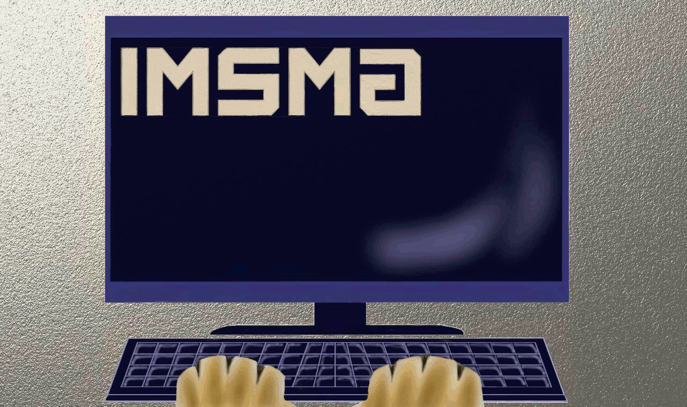

|  |
~~~~The official page of the Mount Saint Mary Academy Technology Club~~~~
|
2014 NJIT Web Design Competition
Each year, NJIT has a web design competition open to high schools who are willing to dedicate their time to create a website that is educational and incorporates technology of any sort. Each school is allowed an unlimited number of teams with 3-4 students in each. Each team creates an educational website and each member must create his or her own page with a topic pertaining to the theme of their website. The Mount participated in this competition in 2012 and is now participating again for the 2014 competition. Click here to learn more!

For the 2012 NJIT Web Design Competition, the iMSMA Club created a website concerning the different biomes around the world.Click here to view the Mount's 2012 Web Design Page!
For the 2014 NJIT Web Design Competition, the iMSMA Club created a website concerning how different things such as music, subliminal messages, gaming, and optical illusions affect the brain. Click here to view the 2014 Web Design Page!
If you are interested in competing on the Mount iMSMA team, please contact Mrs. Mruk at jmruk@mountsaintmary.org or by talking with her in the Library.